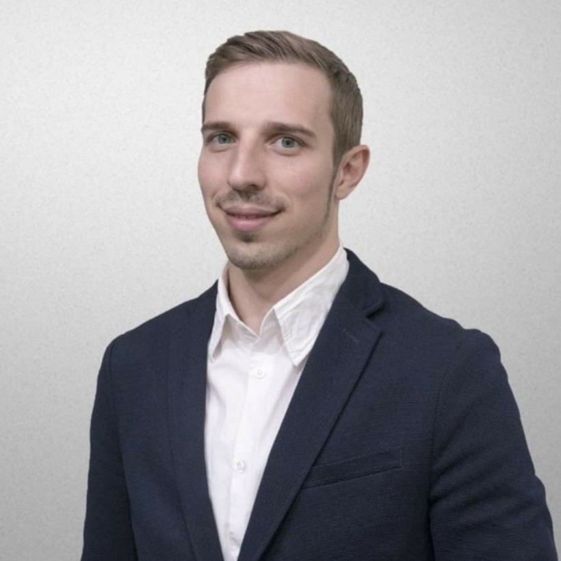

Vitalii Martych
(Translate into Ukrainian)

Personal information
Position: IT-recruiter, HRG
Phone: +38(068)7142787
Telegram: @vitalii068
Email: vitalii.martych@gmail.com
Location: Kyiv region
Work Experience
Frontend-developer
12/2021 - 03/2022
- Launching HR-processes: recruitment, onboarding, offboarding, personnel work, corporate culture
- Search employees: back-end dev(PHP), front-end dev(Vue), embedded devs, mobile dev (Xamarin), UI/UX-designer, digital marketer, design engineer, electronics engineer etc.
Freelance Recruiter
09/2020 - 03/2022
- IT-market: back-end devs (PHP, Java), front-end devs (React, Vue), UI/UX designers, QA engineers
- FMCG-market: head of logistic department, supply chain manager, sales representatives, accountants
- Finance-market: sales managers, marketer, SEO-specialist, english copywriters
- Construction-market: project managers, design engineers, foremen, accountant
- Aircraft: different engineer positions: designers, technologists, strength, avionics, service technicians
HR Generalist in Apple device repair shop “IFIX”
04/2019 - 09/2020
- Launching HR processes from scratch.
- Search administrators, repair engineers, couriers, marketers, copywriters.
- Onboarding and training of staff.
- Quality control of customer service, mentoring
- increased the company's profit by 15%;
- replaced 70% of the company's employees;
- developed and implemented an adaptation program for new employees
Achievements:
Recruiter in recruiting agency “QRS Personnel Solutions”
03/2018 - 03/2019
- Performing a full cycle of search, screening and assessment of middle and top-level personnel for FMCG and Pharma projects throughout Ukraine.
- Search, screening, assessment managers.
- Career consulting
- closing vacancies due to a comprehensive study of the specifics of the pharmaceutical market
- introduced a bot for calls and modern search tools for recruiting into the work of the company
- established contact with new customers of recruiting services
Achievements:
Education
National University of Food Technologies:
Graduate school. PhD in Food technology (2011 - 2014)
Economics and Management Department. Specialist Degree in Management of FEA (2009 - 2012)
Technology of meat and dairy Department. Specialist Degree in Dairy Technology (2006 - 2011)
Language Skills
English: Upper-Intermediate
Ukrainian: Native
Polish: Beginners